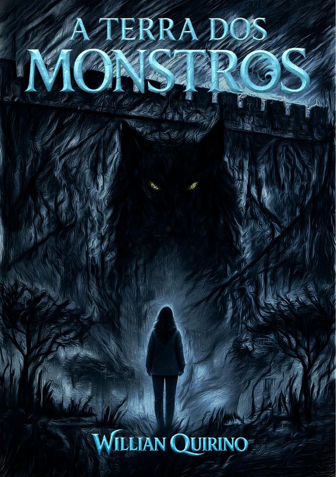
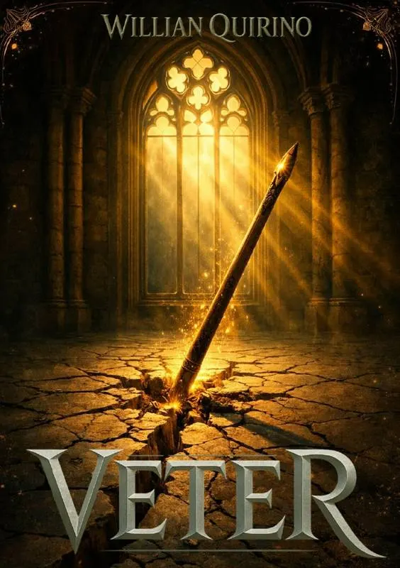
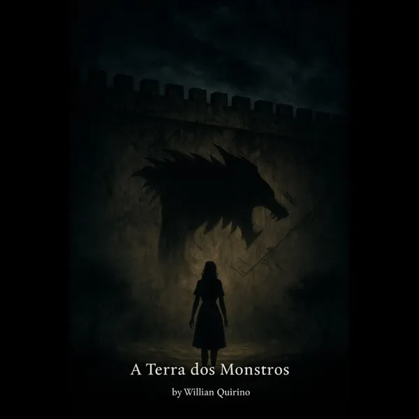
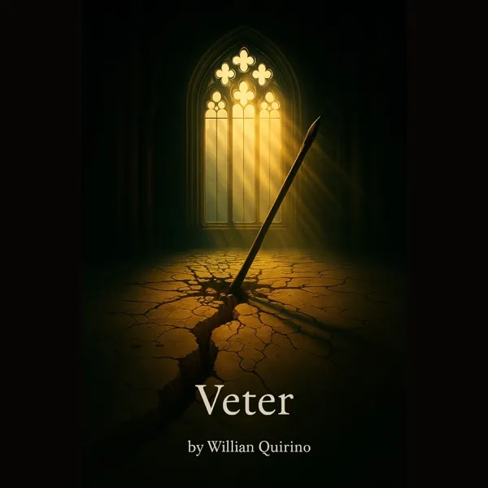
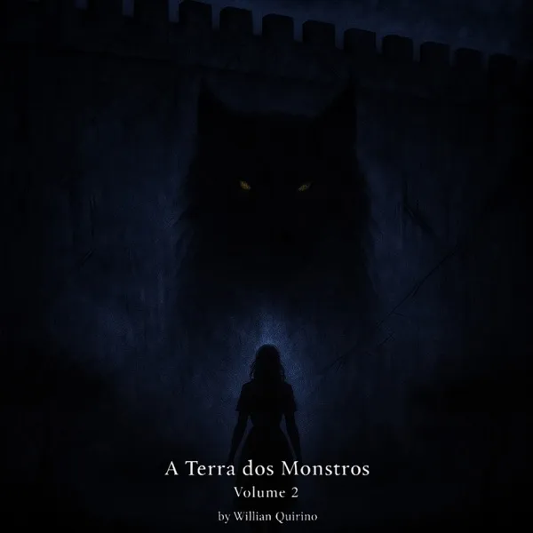
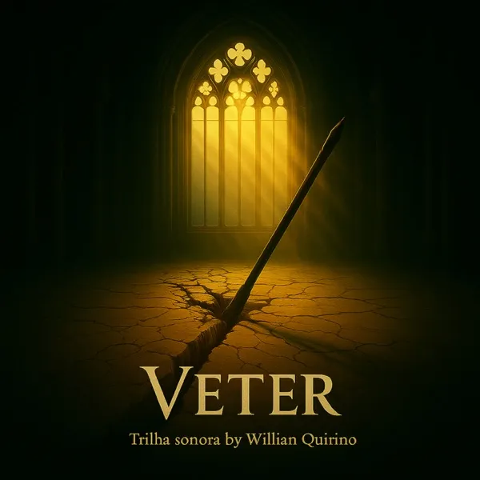

Trilha sonora original
A Terra dos Monstros
Uma trilha sombria, atmosférica e tensa, criada para acompanhar a vida dentro das muralhas e o medo que atravessa a floresta.
Mundos para ler e ouvir
Álbuns, EPs e singles criados para levar as histórias além das páginas e transformar cada universo em som.
Trilhas principais
As trilhas foram compostas para acompanhar o ritmo emocional de cada história, dos muros de Avoltera às ruas de Belonia.

Trilha sonora original
Uma trilha sombria, atmosférica e tensa, criada para acompanhar a vida dentro das muralhas e o medo que atravessa a floresta.

Trilha sonora original
Uma trilha urbana, distópica e emocional, conduzida por transformação, perda e uma força que já não pode ser controlada.
Discografia
Uma coleção em expansão, reunindo trilhas completas e composições lançadas separadamente.

A primeira travessia musical por Braen: rotina, tensão e os perigos que permanecem além das muralhas.

Uma jornada urbana e distópica que acompanha Veter entre perdas, escolhas e confrontos.

O universo se expande com novas sombras, ameaças ocultas e caminhos pela floresta.

Seis faixas sobre memória, afeto e a identidade que resiste à transformação.
Um encerramento musical marcado por despedida, lembrança e permanência.
Uma passagem sonora rumo ao desconhecido que existe além da proteção das muralhas.
Uma composição ligada ao universo de Veter sobre resistência, memória e esperança.